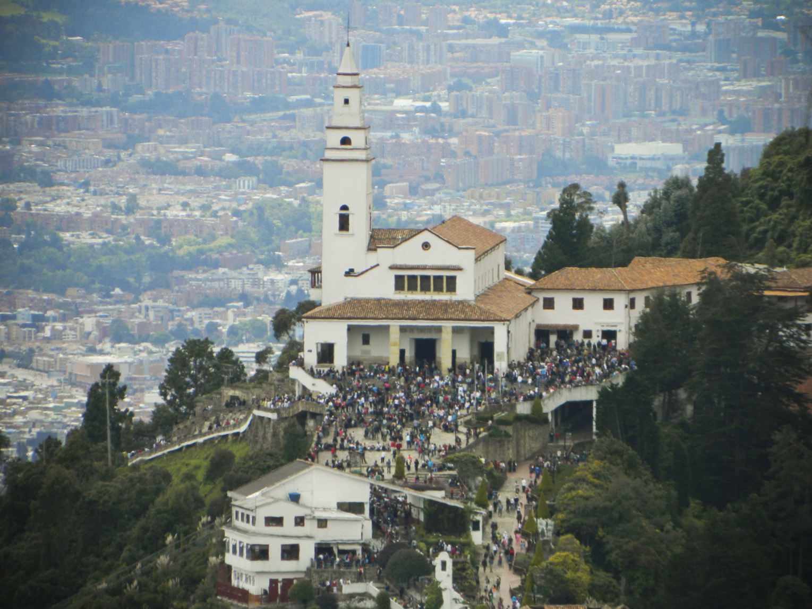
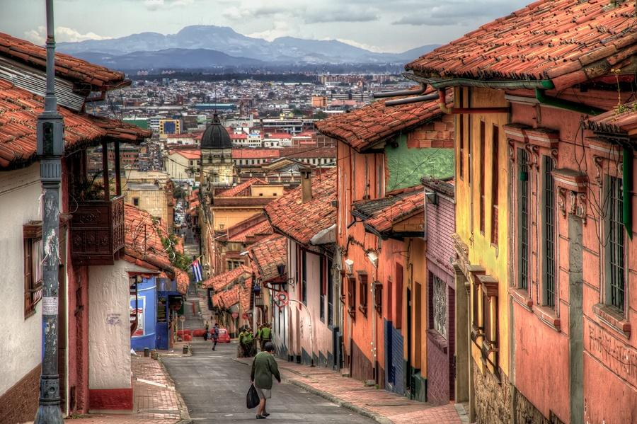
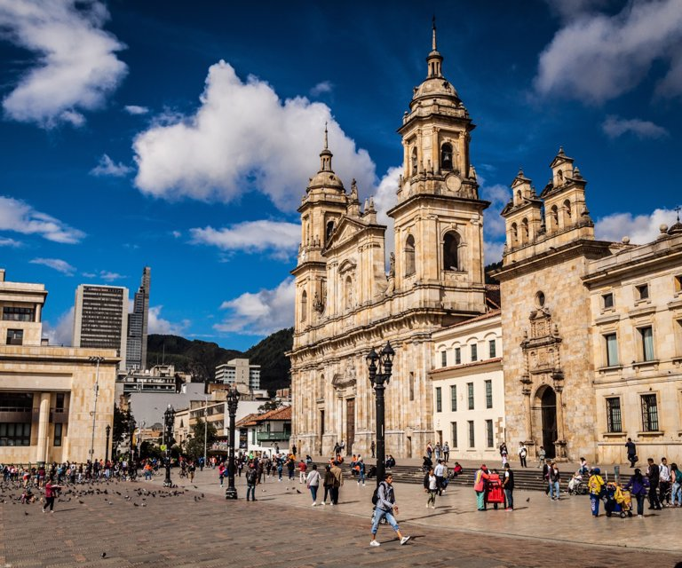
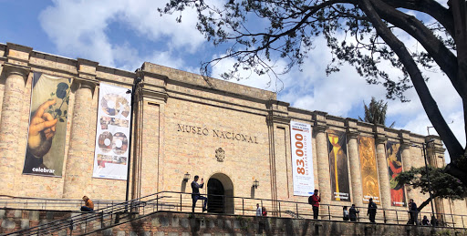

LUGARES TURISTICOS DE BOGOTÁ
| NOMBRE | DESCRIPCIÓN | IMAGEN |
|
|---|
| Monserrate |
El cerro de Monserrate es el más conocido de los cerros Orientales de Bogotá. Junto a Guadalupe es uno de los cerros tutelares de la ciudad. Monserrate tiene una altitud de 3152 m y se ubica sobre la cordillera oriental.Los cerros de Bogotá, de origen sedimentario, tienen por lo menos 16 millones de años de antigüedad, con rocas de edad cretácica pertenecientes al Grupo guadalupe, en lo que se refiere al aspecto geológico. Hasta mediados del siglo XVII fue conocido como cerro de Las Nieves. La basílica del Señor de Monserrate ha sido lugar de peregrinación religiosa desde la época colonial y se constituye en un atractivo natural, religioso, gastronómico de la ciudad. Se puede ascender al cerro por el sendero peatonal, por teleférico o por funicular.Fuente:https://www.ngenespanol.com/traveler/el-santuario-de-monserrate-tiene-la-mejor-vista-de-bogota/ |
 |
| La Candelaria |
La Candelaria es el centro vibrante de Bogotá, con lugares icónicos como una catedral de la época colonial y el Capitolio neoclásico que flanquea la Plaza Bolívar. Estrechas calles llenas de tiendas que venden esmeraldas y artesanías conducen a lugares de interés cultural, como el Museo del Oro, con artefactos precolombinos, y el Museo Botero, que exhibe arte internacional en una mansión colonial. Los restaurantes informales sirven platos como el ajiaco (sopa de pollo y patatas). Fuente:http://www.bogotaturismo.gov.co/sites/default/files/rutas/PORTAFOLIO_CANDELARIA.pdf |
 |
| Plaza de Bolivar |
La Plaza de Bolívar es la plaza principal de la ciudad de Bogotá y, por lo tanto, de Colombia. Se ubica en el centro de la ciudad, y a su alrededor se construyeron varios de los edificios más importantes de la ciudad, como el Palacio de Justicia, el Capitolio Nacional, la Catedral Basílica Metropolitana de Bogotá y Primada de Colombia, entre otros.Se estima que puede albergar a más de 55 mil personas, transformándose así en el epicentro para reuniones políticas, culturales, religiosas y otras manifestaciones.Se la consideró como Monumento Nacional Colombiano el 26 de octubre de 1994 y fue declarada como tal el 19 de octubre de 1995. Se estima que puede albergar a más de 55 mil personas, transformándose así en el epicentro para reuniones políticas, culturales, religiosas y otras manifestaciones. Fuente:https://blog.redbus.co/lugares-turisticos/plaza-bolivar-historia-famoso-bogota/ |
 |
| Museo Nacional de Colombia |
El Museo Nacional de Colombia es el un museo ubicado en Colombia, con una edad de 197 años, es el museo más antiguo del país y uno de los más antiguos de América. Se encuentra ubicado en el Centro Internacional de Bogotá, entre la carrera séptima y la sexta, entre las calles 28 y 29. Fuente:http://www.museonacional.gov.co/Paginas/default.aspx |
 |